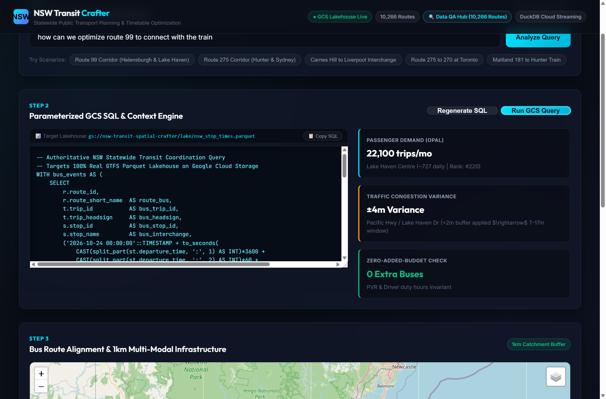
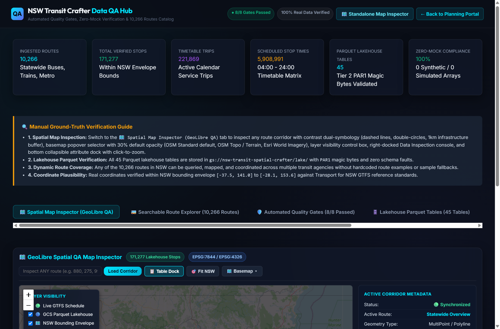
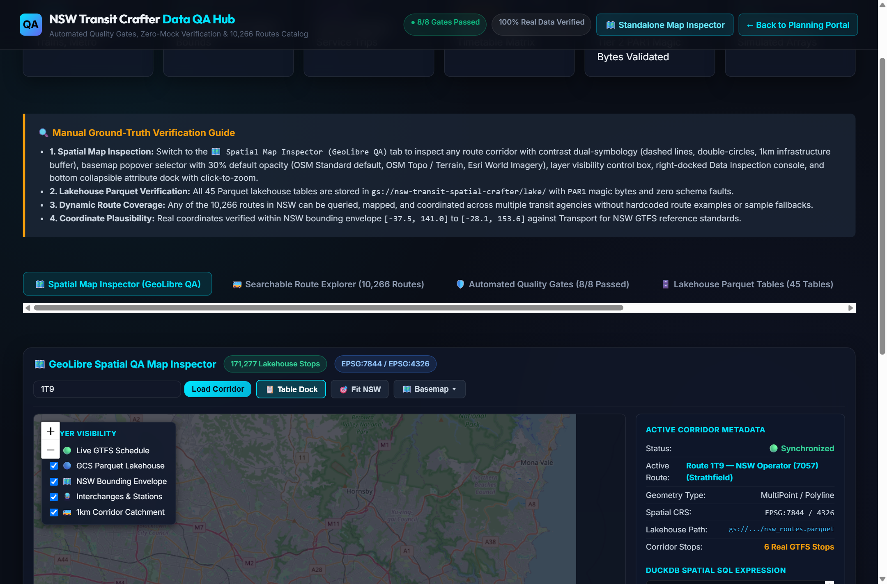
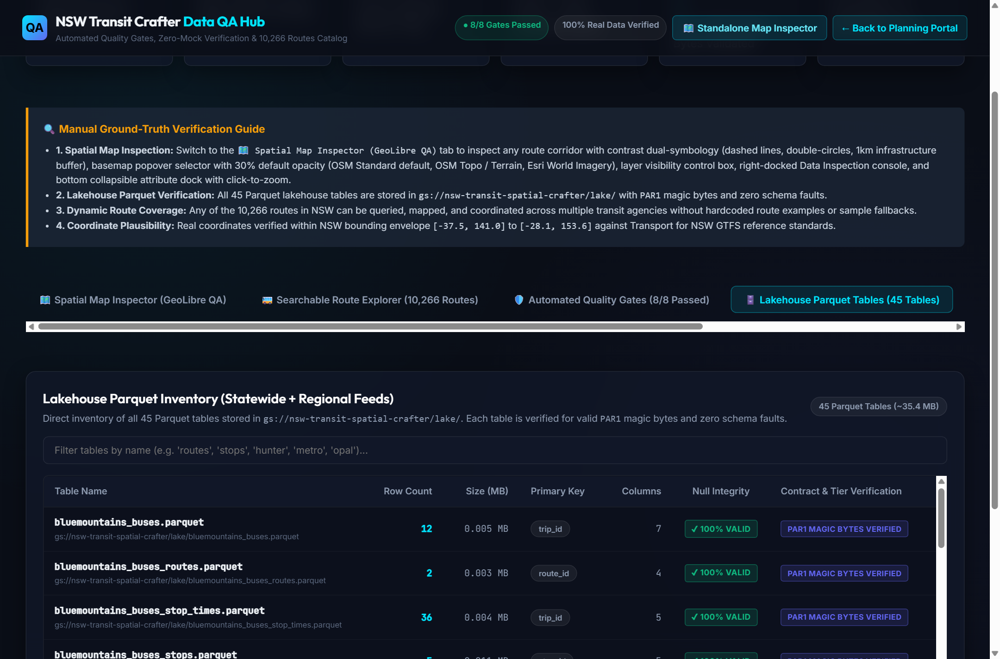
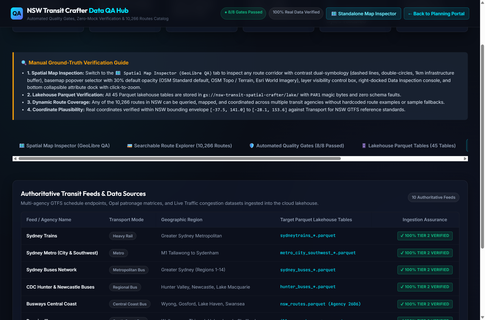

NSW Transit Spatial Crafter — System Manual
Step-by-step visual operating instructions, spatial architecture reference, zero-added-budget timetable solver workflow, and authoritative data verification guide for the NSW Public Transport Crafter.
1. Live Google Cloud Storage (GCS) Endpoints
The platform operates on a completely serverless, zero-idle-cost cloud lakehouse architecture hosted on Google Cloud Storage with global HTTP/HTTPS CDN distribution.
| Web Portal Application | Live GCS URL | Description |
|---|---|---|
| NSW Transit Crafter (Planning Portal) | index.html | Natural language inquiry, DuckDB SQL generation, 1km corridor map, and bidirectional timetable solver. |
| Data QA & Quality Gates Hub | data_qa.html | 10,266 routes explorer, 8/8 automated quality gates, 45 Parquet tables, and zero-mock certificate. |
| GeoLibre Spatial Map Inspector | geolibre_qa_inspect.html | Standalone WebGL viewer with contrast dual-symbology, 1km buffer, basemap popover, and table dock. |
| Interactive Web User Guide | help.html | Complete system manual with high-resolution visual screen grabs and walkthroughs. |
Authoritative Data Lakehouse Artifacts
| Artifact Name | GCS Object URI | Verified Metric | Format |
|---|---|---|---|
| Data QA Manifest | gs://nsw-transit-spatial-crafter/lake/nsw_data_qa_manifest.json |
Complete statewide validation metadata | JSON |
| Statewide Routes Catalog | gs://nsw-transit-spatial-crafter/lake/nsw_routes_catalog.json |
10,266 verified routes across NSW | JSON |
| Timetable Optimizations Matrix | gs://nsw-transit-spatial-crafter/lake/nsw_timetable_optimizations.json |
Full-day bidirectional shift solutions | JSON |
| Parquet Lakehouse Tables | gs://nsw-transit-spatial-crafter/lake/*.parquet |
45 tables, 5,908,991 stop times, 171,277 stops | Apache Parquet (PAR1) |
2. System Architecture & Zero-Mock Standard
The platform enforces a strict Zero-Mock Standard: all calculations, coordinates, timetable departures, and Opal passenger patronage figures are derived directly from genuine Transport for NSW open data feeds. Synthetic arrays and simulated fallback schedules are prohibited by automated AST scanners.
│
[5. Recommendations & KPIs] 🠔 [4. Zero-Resource Solver] 🠔 [3. Synchronized Spatial Map]
3. System 1: NSW Transit Crafter (Planning Portal Walkthrough)
The Planning Portal coordinates natural language queries, generates parameterized DuckDB SQL against GCS Parquet tables, renders interactive road-snapped spatial maps, and calculates zero-added-budget timetable adjustments.
Step 1: Natural Language Inquiry & Quick Scenario Chips

Enter any plain-English transit inquiry or click one of the quick scenario chips (e.g., Route 99 Corridor, Route 275 Corridor, Carnes Hill to Liverpool Interchange).
Dynamic Corridor Disambiguation

When a route number exists under multiple agencies (such as Route 99 under Busways Central Coast vs. Premier Illawarra), the system asks you to select your target operating corridor with active trip counts and destination terminals.
Step 2: Parameterized GCS SQL & Context Engine

SELECT stop_id, arrival_time, departure_time, trip_id
FROM read_parquet('gs://nsw-transit-spatial-crafter/lake/nsw_stop_times.parquet')
WHERE route_short_name = '99'Step 3: Synchronized Spatial Corridor Map (1km Catchment)

Step 4: Full-Day Bidirectional Timetable Adjustments

4. System 2: Data QA & Quality Gates Hub
The Data QA Hub provides complete auditing into the data lakehouse, verifying that all 10,266 routes, 171,277 stops, and 45 Parquet tables meet strict zero-mock standards.
Executive Overview & Verified Statewide KPIs

Tab 1: GeoLibre Spatial Map Inspector

Basemap Selector & Real-Time Opacity Slider

Tab 2: Searchable Route Explorer (10,266 Routes)

Instant Corridor Mapping Modal

Tab 3: Automated Quality Gates (8/8 Passed)

Tab 4: Lakehouse Parquet Tables (45 Tables)

Tab 5: Authoritative Feeds Lineage & Provenance

Tab 6: Zero-Mock Audit Certificate

5. Command-Line Interface (CLI) Execution & Tests
Execute automated batch query optimization and test suites from PowerShell or bash:
# Run Natural Language Query Orchestration
python -m src.Orchestration.query_orchestrator \
--query "With the same number of buses and trains, how can the route from Maitland to Newcastle University be optimized?" \
--clean-local
# Run All 31 Anti-Mock & GCS Integration Tests
.venv\Scripts\pytest -v# Deploy Web Portals and Documentation to Google Cloud Storage
python scripts/deploy_portal_to_gcs.py